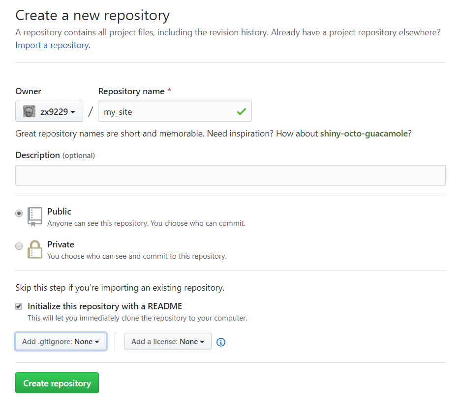
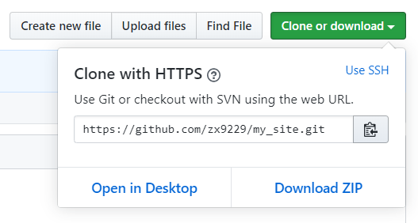
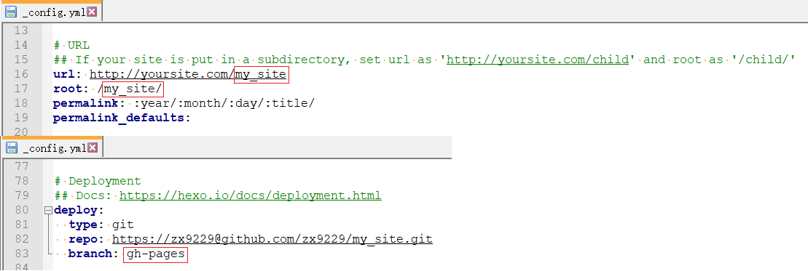

思路
我们有一个GitHub账号zx9229，我们新建了一个项目/版本库my_site，my_site有一个分支gh-pages，我们往gh-pages提交了一个静态网站，那么我们可以通过http(s)://zx9229.github.io/my_site/访问这个静态网站。
相关链接：
发布到 GitHub Pages | GitBook 简明教程。
About GitHub Pages - GitHub Help。
相关内容：
User and organization sites are always published from a repository named <user>.github.io or <organization>.github.io. Unless you’re using a custom domain, user and organization sites are available at http(s)://<username>.github.io or http(s)://<organization>.github.io.
The source files for a project site are stored in the same repository as their project. Unless you’re using a custom domain, project sites are available at http(s)://<user>.github.io/<repository> or http(s)://<organization>.github.io/<repository>.
The default publishing source for a project site is the gh-pages branch. If the repository for your project site has a gh-pages branch, your site will publish automatically from that branch.
步骤
创建版本库

克隆版本库

设置Hexo
1 | :: 克隆版本库 |
配置_config.yml
hexo-deployer-git/README.md。
项目站点在项目路径下。
要部署到gh-pages分支。

生成和提交静态网站
1 | :: 清除文件(缓存文件和已生成的静态文件等) |
访问网址
浏览器访问https://zx9229.github.io/my_site/查看结果。